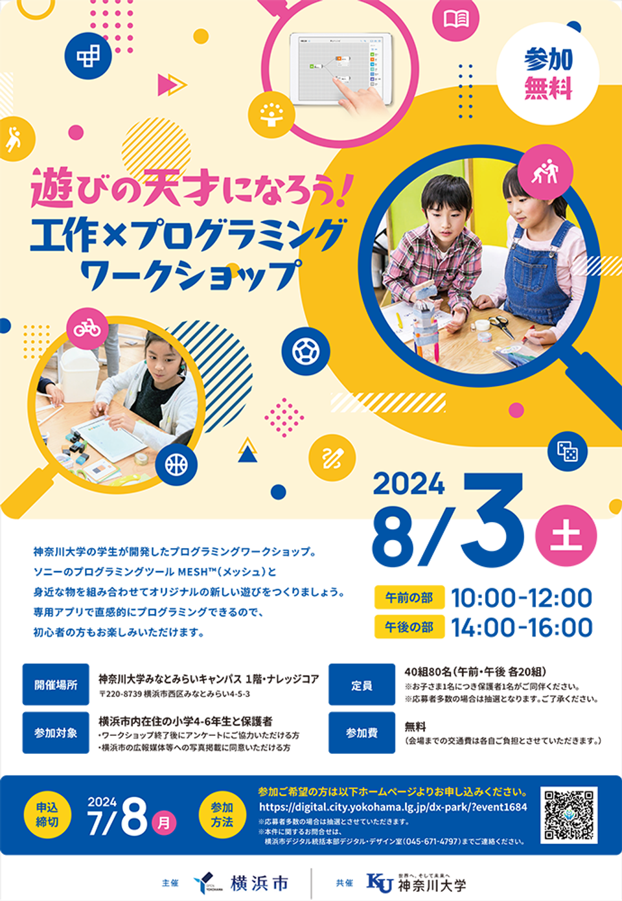

プロジェクト目標
自分が思うことを素直に伝える。楽しんでやる。
意図：SONYや横浜市の方へも物怖じせず、素直に意見を伝えられるようにしたいと思うから。
また、楽しんでやることが、ターゲットである子どもたちに近い目線でプロジェクトを進めることにつながると感じた。
完成ワークショップ
当日の様子
プロジェクトに参加する大学生がチューターとしてそれぞれの子どもたちを担当した。
子どもとの距離が縮まり、スムーズに進行した。子どもたちは時間を余すことなく使い、遊びの発明に夢中になっている様子だった。

参加者の小学生が作ったエアガン：ボタンブロック×スピーカー＆通知